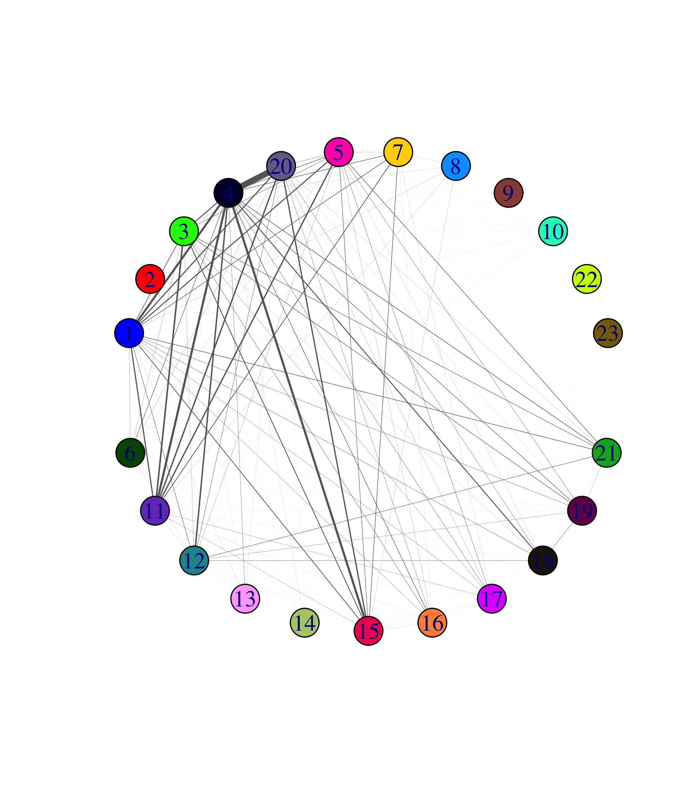

Last updated: 2025-09-05
Checks: 6 1
Knit directory: Graph-MF/
This reproducible R Markdown analysis was created with workflowr (version 1.7.1). The Checks tab describes the reproducibility checks that were applied when the results were created. The Past versions tab lists the development history.
Great! Since the R Markdown file has been committed to the Git repository, you know the exact version of the code that produced these results.
Great job! The global environment was empty. Objects defined in the global environment can affect the analysis in your R Markdown file in unknown ways. For reproduciblity it’s best to always run the code in an empty environment.
The command set.seed(20250902) was run prior to running
the code in the R Markdown file. Setting a seed ensures that any results
that rely on randomness, e.g. subsampling or permutations, are
reproducible.
Great job! Recording the operating system, R version, and package versions is critical for reproducibility.
Nice! There were no cached chunks for this analysis, so you can be confident that you successfully produced the results during this run.
Using absolute paths to the files within your workflowr project makes it difficult for you and others to run your code on a different machine. Change the absolute path(s) below to the suggested relative path(s) to make your code more reproducible.
| absolute | relative |
|---|---|
| ~/Documents/Graph-MF | . |
Great! You are using Git for version control. Tracking code development and connecting the code version to the results is critical for reproducibility.
The results in this page were generated with repository version e4d4362. See the Past versions tab to see a history of the changes made to the R Markdown and HTML files.
Note that you need to be careful to ensure that all relevant files for
the analysis have been committed to Git prior to generating the results
(you can use wflow_publish or
wflow_git_commit). workflowr only checks the R Markdown
file, but you know if there are other scripts or data files that it
depends on. Below is the status of the Git repository when the results
were generated:
Ignored files:
Ignored: .DS_Store
Ignored: .RData
Ignored: .Rhistory
Ignored: analysis/.RData
Ignored: analysis/.Rhistory
Untracked files:
Untracked: output/pancreas_admixture_barplot.pdf
Untracked: output/pancreas_grouped.pdf
Untracked: push.R
Unstaged changes:
Modified: code/visualize-RNAseq.R
Note that any generated files, e.g. HTML, png, CSS, etc., are not included in this status report because it is ok for generated content to have uncommitted changes.
These are the previous versions of the repository in which changes were
made to the R Markdown (analysis/pancreas-visual.Rmd) and
HTML (docs/pancreas-visual.html) files. If you’ve
configured a remote Git repository (see ?wflow_git_remote),
click on the hyperlinks in the table below to view the files as they
were in that past version.
| File | Version | Author | Date | Message |
|---|---|---|---|---|
| Rmd | e4d4362 | dodat97 | 2025-09-05 | wflow_publish(c("analysis/index.Rmd", "analysis/pancreas-visual.Rmd")) |
We want to visualize the connectivity of factors in pancreas data, where connection of factor i and j is defined by the amount of color i and j that appear in a same cell (in the admixture barplot). The hope is to see
So the output would somehow ``resemble’’ what we want to see in additive clustering.
First we plot the admixture barplots that Peter made. (Thanks, Peter!)
subsample_cell_types <- function (x, n = 1000) {
cells <- NULL
groups <- levels(x)
for (g in groups) {
i <- which(x == g)
n0 <- min(n,length(i))
i <- sample(i,n0)
cells <- c(cells,i)
}
return(sort(cells))
}
setwd("~/Documents/Graph-MF")
load("data/pancreas.RData")
load("data/pancreas_factors.RData")
timings0 <- timings
load("data/pancreas_factors2.RData")
timings <- c(timings0,timings)
cells <- subsample_cell_types(sample_info$celltype,n = 1000)
L <- fl_nmf_ldf$L
k <- ncol(L)
colnames(L) <- paste0("k",1:k)
batch_factors <- c(2:5,7:8,20)
celltype_factors <- c(6,11:19,21)
other_factors <- c(1,9:10,22:23)
celltype <- sample_info$celltype
celltype <-
factor(celltype,
c("acinar","ductal","activated_stellate","quiescent_stellate",
"endothelial","macrophage","mast","schwann","t_cell","alpha",
"beta","delta","gamma","epsilon"))
p1 <- structure_plot(L,topics = batch_factors,grouping = sample_info$tech,
gap = 3,perplexity = 70,n = 500) +
labs(y = "membership",title = "data-set factors",
fill = "factor",color = "factor")Read the 25 x 23 data matrix successfully!
Using no_dims = 1, perplexity = 7.000000, and theta = 0.100000
Computing input similarities...
Building tree...
Done in 0.00 seconds (sparsity = 0.934400)!
Learning embedding...
Iteration 50: error is 69.671371 (50 iterations in 0.00 seconds)
Iteration 100: error is 65.166263 (50 iterations in 0.00 seconds)
Iteration 150: error is 71.778784 (50 iterations in 0.00 seconds)
Iteration 200: error is 68.525117 (50 iterations in 0.00 seconds)
Iteration 250: error is 71.067343 (50 iterations in 0.00 seconds)
Iteration 300: error is 4.342027 (50 iterations in 0.00 seconds)
Iteration 350: error is 6.244031 (50 iterations in 0.00 seconds)
Iteration 400: error is 3.655452 (50 iterations in 0.00 seconds)
Iteration 450: error is 2.707638 (50 iterations in 0.00 seconds)
Iteration 500: error is 2.549453 (50 iterations in 0.00 seconds)
Iteration 550: error is 2.537124 (50 iterations in 0.00 seconds)
Iteration 600: error is 2.529458 (50 iterations in 0.00 seconds)
Iteration 650: error is 2.524806 (50 iterations in 0.00 seconds)
Iteration 700: error is 2.523172 (50 iterations in 0.00 seconds)
Iteration 750: error is 2.523036 (50 iterations in 0.00 seconds)
Iteration 800: error is 2.523025 (50 iterations in 0.00 seconds)
Iteration 850: error is 2.523023 (50 iterations in 0.00 seconds)
Iteration 900: error is 2.523023 (50 iterations in 0.00 seconds)
Iteration 950: error is 2.523022 (50 iterations in 0.00 seconds)
Iteration 1000: error is 2.523022 (50 iterations in 0.00 seconds)
Fitting performed in 0.01 seconds.Read the 67 x 23 data matrix successfully!
Using no_dims = 1, perplexity = 21.000000, and theta = 0.100000
Computing input similarities...
Building tree...
Done in 0.00 seconds (sparsity = 0.980619)!
Learning embedding...
Iteration 50: error is 53.347960 (50 iterations in 0.00 seconds)
Iteration 100: error is 53.490391 (50 iterations in 0.00 seconds)
Iteration 150: error is 54.485355 (50 iterations in 0.00 seconds)
Iteration 200: error is 53.909019 (50 iterations in 0.00 seconds)
Iteration 250: error is 51.439757 (50 iterations in 0.00 seconds)
Iteration 300: error is 1.804771 (50 iterations in 0.00 seconds)
Iteration 350: error is 0.254397 (50 iterations in 0.00 seconds)
Iteration 400: error is 0.239208 (50 iterations in 0.00 seconds)
Iteration 450: error is 0.239214 (50 iterations in 0.00 seconds)
Iteration 500: error is 0.239218 (50 iterations in 0.00 seconds)
Iteration 550: error is 0.239218 (50 iterations in 0.00 seconds)
Iteration 600: error is 0.239218 (50 iterations in 0.00 seconds)
Iteration 650: error is 0.239214 (50 iterations in 0.00 seconds)
Iteration 700: error is 0.239218 (50 iterations in 0.00 seconds)
Iteration 750: error is 0.239218 (50 iterations in 0.00 seconds)
Iteration 800: error is 0.239218 (50 iterations in 0.00 seconds)
Iteration 850: error is 0.239218 (50 iterations in 0.00 seconds)
Iteration 900: error is 0.239214 (50 iterations in 0.00 seconds)
Iteration 950: error is 0.239218 (50 iterations in 0.00 seconds)
Iteration 1000: error is 0.239218 (50 iterations in 0.00 seconds)
Fitting performed in 0.03 seconds.Read the 20 x 23 data matrix successfully!
Using no_dims = 1, perplexity = 5.000000, and theta = 0.100000
Computing input similarities...
Building tree...
Done in 0.00 seconds (sparsity = 0.875000)!
Learning embedding...
Iteration 50: error is 65.230950 (50 iterations in 0.00 seconds)
Iteration 100: error is 70.955301 (50 iterations in 0.00 seconds)
Iteration 150: error is 66.569684 (50 iterations in 0.00 seconds)
Iteration 200: error is 68.361210 (50 iterations in 0.00 seconds)
Iteration 250: error is 78.930600 (50 iterations in 0.00 seconds)
Iteration 300: error is 6.501481 (50 iterations in 0.00 seconds)
Iteration 350: error is 2.923208 (50 iterations in 0.00 seconds)
Iteration 400: error is 2.770547 (50 iterations in 0.00 seconds)
Iteration 450: error is 2.755463 (50 iterations in 0.00 seconds)
Iteration 500: error is 2.755326 (50 iterations in 0.00 seconds)
Iteration 550: error is 2.755326 (50 iterations in 0.00 seconds)
Iteration 600: error is 2.755326 (50 iterations in 0.00 seconds)
Iteration 650: error is 2.755325 (50 iterations in 0.00 seconds)
Iteration 700: error is 2.755324 (50 iterations in 0.00 seconds)
Iteration 750: error is 2.755323 (50 iterations in 0.00 seconds)
Iteration 800: error is 2.755322 (50 iterations in 0.00 seconds)
Iteration 850: error is 2.755321 (50 iterations in 0.00 seconds)
Iteration 900: error is 2.755320 (50 iterations in 0.00 seconds)
Iteration 950: error is 2.755318 (50 iterations in 0.00 seconds)
Iteration 1000: error is 2.755316 (50 iterations in 0.00 seconds)
Fitting performed in 0.00 seconds.Read the 68 x 23 data matrix successfully!
Using no_dims = 1, perplexity = 21.000000, and theta = 0.100000
Computing input similarities...
Building tree...
Done in 0.00 seconds (sparsity = 0.978374)!
Learning embedding...
Iteration 50: error is 52.568393 (50 iterations in 0.00 seconds)
Iteration 100: error is 48.884560 (50 iterations in 0.00 seconds)
Iteration 150: error is 56.510045 (50 iterations in 0.00 seconds)
Iteration 200: error is 54.039640 (50 iterations in 0.00 seconds)
Iteration 250: error is 56.637523 (50 iterations in 0.00 seconds)
Iteration 300: error is 1.456402 (50 iterations in 0.00 seconds)
Iteration 350: error is 0.858568 (50 iterations in 0.00 seconds)
Iteration 400: error is 0.768091 (50 iterations in 0.00 seconds)
Iteration 450: error is 0.766908 (50 iterations in 0.00 seconds)
Iteration 500: error is 0.766905 (50 iterations in 0.00 seconds)
Iteration 550: error is 0.766904 (50 iterations in 0.00 seconds)
Iteration 600: error is 0.766905 (50 iterations in 0.00 seconds)
Iteration 650: error is 0.766905 (50 iterations in 0.00 seconds)
Iteration 700: error is 0.766905 (50 iterations in 0.00 seconds)
Iteration 750: error is 0.766904 (50 iterations in 0.00 seconds)
Iteration 800: error is 0.766905 (50 iterations in 0.00 seconds)
Iteration 850: error is 0.766905 (50 iterations in 0.00 seconds)
Iteration 900: error is 0.766905 (50 iterations in 0.00 seconds)
Iteration 950: error is 0.766904 (50 iterations in 0.00 seconds)
Iteration 1000: error is 0.766905 (50 iterations in 0.00 seconds)
Fitting performed in 0.03 seconds.Read the 51 x 23 data matrix successfully!
Using no_dims = 1, perplexity = 15.000000, and theta = 0.100000
Computing input similarities...
Building tree...
Done in 0.00 seconds (sparsity = 0.962707)!
Learning embedding...
Iteration 50: error is 55.918945 (50 iterations in 0.00 seconds)
Iteration 100: error is 53.508151 (50 iterations in 0.00 seconds)
Iteration 150: error is 57.807038 (50 iterations in 0.00 seconds)
Iteration 200: error is 55.898789 (50 iterations in 0.00 seconds)
Iteration 250: error is 56.839608 (50 iterations in 0.00 seconds)
Iteration 300: error is 3.239476 (50 iterations in 0.00 seconds)
Iteration 350: error is 3.094219 (50 iterations in 0.00 seconds)
Iteration 400: error is 2.270635 (50 iterations in 0.00 seconds)
Iteration 450: error is 0.734141 (50 iterations in 0.00 seconds)
Iteration 500: error is 0.702496 (50 iterations in 0.00 seconds)
Iteration 550: error is 0.702516 (50 iterations in 0.00 seconds)
Iteration 600: error is 0.702514 (50 iterations in 0.00 seconds)
Iteration 650: error is 0.702517 (50 iterations in 0.00 seconds)
Iteration 700: error is 0.702516 (50 iterations in 0.00 seconds)
Iteration 750: error is 0.702517 (50 iterations in 0.00 seconds)
Iteration 800: error is 0.702517 (50 iterations in 0.00 seconds)
Iteration 850: error is 0.702517 (50 iterations in 0.00 seconds)
Iteration 900: error is 0.702516 (50 iterations in 0.00 seconds)
Iteration 950: error is 0.702517 (50 iterations in 0.00 seconds)
Iteration 1000: error is 0.702517 (50 iterations in 0.00 seconds)
Fitting performed in 0.02 seconds.Read the 108 x 23 data matrix successfully!
Using no_dims = 1, perplexity = 34.000000, and theta = 0.100000
Computing input similarities...
Building tree...
Done in 0.00 seconds (sparsity = 0.985597)!
Learning embedding...
Iteration 50: error is 46.137753 (50 iterations in 0.00 seconds)
Iteration 100: error is 49.265346 (50 iterations in 0.00 seconds)
Iteration 150: error is 48.954488 (50 iterations in 0.00 seconds)
Iteration 200: error is 51.037854 (50 iterations in 0.00 seconds)
Iteration 250: error is 49.430699 (50 iterations in 0.00 seconds)
Iteration 300: error is 1.362048 (50 iterations in 0.00 seconds)
Iteration 350: error is 0.559976 (50 iterations in 0.00 seconds)
Iteration 400: error is 0.436206 (50 iterations in 0.00 seconds)
Iteration 450: error is 0.435895 (50 iterations in 0.00 seconds)
Iteration 500: error is 0.435896 (50 iterations in 0.00 seconds)
Iteration 550: error is 0.435896 (50 iterations in 0.00 seconds)
Iteration 600: error is 0.435896 (50 iterations in 0.00 seconds)
Iteration 650: error is 0.435895 (50 iterations in 0.00 seconds)
Iteration 700: error is 0.435897 (50 iterations in 0.00 seconds)
Iteration 750: error is 0.435897 (50 iterations in 0.00 seconds)
Iteration 800: error is 0.435897 (50 iterations in 0.00 seconds)
Iteration 850: error is 0.435896 (50 iterations in 0.00 seconds)
Iteration 900: error is 0.435895 (50 iterations in 0.00 seconds)
Iteration 950: error is 0.435895 (50 iterations in 0.00 seconds)
Iteration 1000: error is 0.435896 (50 iterations in 0.00 seconds)
Fitting performed in 0.05 seconds.Read the 44 x 23 data matrix successfully!
Using no_dims = 1, perplexity = 13.000000, and theta = 0.100000
Computing input similarities...
Building tree...
Done in 0.00 seconds (sparsity = 0.962810)!
Learning embedding...
Iteration 50: error is 56.694127 (50 iterations in 0.00 seconds)
Iteration 100: error is 59.413907 (50 iterations in 0.00 seconds)
Iteration 150: error is 57.179607 (50 iterations in 0.00 seconds)
Iteration 200: error is 60.978224 (50 iterations in 0.00 seconds)
Iteration 250: error is 59.398758 (50 iterations in 0.00 seconds)
Iteration 300: error is 2.660630 (50 iterations in 0.00 seconds)
Iteration 350: error is 0.688762 (50 iterations in 0.00 seconds)
Iteration 400: error is 0.509430 (50 iterations in 0.00 seconds)
Iteration 450: error is 0.508322 (50 iterations in 0.00 seconds)
Iteration 500: error is 0.508309 (50 iterations in 0.00 seconds)
Iteration 550: error is 0.508323 (50 iterations in 0.00 seconds)
Iteration 600: error is 0.508326 (50 iterations in 0.00 seconds)
Iteration 650: error is 0.508323 (50 iterations in 0.00 seconds)
Iteration 700: error is 0.508323 (50 iterations in 0.00 seconds)
Iteration 750: error is 0.508309 (50 iterations in 0.00 seconds)
Iteration 800: error is 0.508310 (50 iterations in 0.00 seconds)
Iteration 850: error is 0.508310 (50 iterations in 0.00 seconds)
Iteration 900: error is 0.508323 (50 iterations in 0.00 seconds)
Iteration 950: error is 0.508323 (50 iterations in 0.00 seconds)
Iteration 1000: error is 0.508325 (50 iterations in 0.00 seconds)
Fitting performed in 0.01 seconds.Read the 34 x 23 data matrix successfully!
Using no_dims = 1, perplexity = 10.000000, and theta = 0.100000
Computing input similarities...
Building tree...
Done in 0.00 seconds (sparsity = 0.951557)!
Learning embedding...
Iteration 50: error is 63.428590 (50 iterations in 0.00 seconds)
Iteration 100: error is 59.309149 (50 iterations in 0.00 seconds)
Iteration 150: error is 60.321181 (50 iterations in 0.00 seconds)
Iteration 200: error is 61.767581 (50 iterations in 0.00 seconds)
Iteration 250: error is 58.970126 (50 iterations in 0.00 seconds)
Iteration 300: error is 3.263545 (50 iterations in 0.00 seconds)
Iteration 350: error is 4.436462 (50 iterations in 0.00 seconds)
Iteration 400: error is 5.324409 (50 iterations in 0.00 seconds)
Iteration 450: error is 5.180129 (50 iterations in 0.00 seconds)
Iteration 500: error is 4.086032 (50 iterations in 0.00 seconds)
Iteration 550: error is 5.440987 (50 iterations in 0.00 seconds)
Iteration 600: error is 3.859452 (50 iterations in 0.00 seconds)
Iteration 650: error is 3.247716 (50 iterations in 0.00 seconds)
Iteration 700: error is 3.053615 (50 iterations in 0.00 seconds)
Iteration 750: error is 2.978178 (50 iterations in 0.00 seconds)
Iteration 800: error is 2.953208 (50 iterations in 0.00 seconds)
Iteration 850: error is 2.934044 (50 iterations in 0.00 seconds)
Iteration 900: error is 2.904730 (50 iterations in 0.00 seconds)
Iteration 950: error is 2.884228 (50 iterations in 0.00 seconds)
Iteration 1000: error is 2.879234 (50 iterations in 0.00 seconds)
Fitting performed in 0.01 seconds.Read the 83 x 23 data matrix successfully!
Using no_dims = 1, perplexity = 26.000000, and theta = 0.100000
Computing input similarities...
Building tree...
Done in 0.00 seconds (sparsity = 0.980113)!
Learning embedding...
Iteration 50: error is 51.648851 (50 iterations in 0.00 seconds)
Iteration 100: error is 54.098627 (50 iterations in 0.00 seconds)
Iteration 150: error is 53.947347 (50 iterations in 0.00 seconds)
Iteration 200: error is 51.456134 (50 iterations in 0.00 seconds)
Iteration 250: error is 54.141571 (50 iterations in 0.00 seconds)
Iteration 300: error is 2.045690 (50 iterations in 0.00 seconds)
Iteration 350: error is 0.917455 (50 iterations in 0.00 seconds)
Iteration 400: error is 0.717501 (50 iterations in 0.00 seconds)
Iteration 450: error is 0.713082 (50 iterations in 0.00 seconds)
Iteration 500: error is 0.713083 (50 iterations in 0.00 seconds)
Iteration 550: error is 0.713083 (50 iterations in 0.00 seconds)
Iteration 600: error is 0.713083 (50 iterations in 0.00 seconds)
Iteration 650: error is 0.713083 (50 iterations in 0.00 seconds)
Iteration 700: error is 0.713083 (50 iterations in 0.00 seconds)
Iteration 750: error is 0.713083 (50 iterations in 0.00 seconds)
Iteration 800: error is 0.713083 (50 iterations in 0.00 seconds)
Iteration 850: error is 0.713083 (50 iterations in 0.00 seconds)
Iteration 900: error is 0.713083 (50 iterations in 0.00 seconds)
Iteration 950: error is 0.713083 (50 iterations in 0.00 seconds)
Iteration 1000: error is 0.713083 (50 iterations in 0.00 seconds)
Fitting performed in 0.03 seconds.p2 <- structure_plot(L[cells,],topics = celltype_factors,
grouping = celltype[cells],gap = 3,
n = 500,perplexity = 70) +
labs(y = "membership",title = "cell-type factors",
fill = "factor",color = "factor")Read the 72 x 23 data matrix successfully!
Using no_dims = 1, perplexity = 22.000000, and theta = 0.100000
Computing input similarities...
Building tree...
Done in 0.00 seconds (sparsity = 0.974923)!
Learning embedding...
Iteration 50: error is 50.797501 (50 iterations in 0.00 seconds)
Iteration 100: error is 54.569989 (50 iterations in 0.00 seconds)
Iteration 150: error is 57.605850 (50 iterations in 0.00 seconds)
Iteration 200: error is 53.359093 (50 iterations in 0.00 seconds)
Iteration 250: error is 55.174704 (50 iterations in 0.00 seconds)
Iteration 300: error is 1.619210 (50 iterations in 0.00 seconds)
Iteration 350: error is 0.965562 (50 iterations in 0.00 seconds)
Iteration 400: error is 0.964621 (50 iterations in 0.00 seconds)
Iteration 450: error is 0.964619 (50 iterations in 0.00 seconds)
Iteration 500: error is 0.964620 (50 iterations in 0.00 seconds)
Iteration 550: error is 0.964620 (50 iterations in 0.00 seconds)
Iteration 600: error is 0.964621 (50 iterations in 0.00 seconds)
Iteration 650: error is 0.964620 (50 iterations in 0.00 seconds)
Iteration 700: error is 0.964620 (50 iterations in 0.00 seconds)
Iteration 750: error is 0.964620 (50 iterations in 0.00 seconds)
Iteration 800: error is 0.964620 (50 iterations in 0.00 seconds)
Iteration 850: error is 0.964620 (50 iterations in 0.00 seconds)
Iteration 900: error is 0.964619 (50 iterations in 0.00 seconds)
Iteration 950: error is 0.964620 (50 iterations in 0.00 seconds)
Iteration 1000: error is 0.964620 (50 iterations in 0.00 seconds)
Fitting performed in 0.03 seconds.Read the 68 x 23 data matrix successfully!
Using no_dims = 1, perplexity = 21.000000, and theta = 0.100000
Computing input similarities...
Building tree...
Done in 0.00 seconds (sparsity = 0.977509)!
Learning embedding...
Iteration 50: error is 51.152116 (50 iterations in 0.00 seconds)
Iteration 100: error is 52.558122 (50 iterations in 0.00 seconds)
Iteration 150: error is 52.185452 (50 iterations in 0.00 seconds)
Iteration 200: error is 52.776691 (50 iterations in 0.00 seconds)
Iteration 250: error is 50.803689 (50 iterations in 0.00 seconds)
Iteration 300: error is 1.775988 (50 iterations in 0.00 seconds)
Iteration 350: error is 0.917053 (50 iterations in 0.00 seconds)
Iteration 400: error is 0.914227 (50 iterations in 0.00 seconds)
Iteration 450: error is 0.914223 (50 iterations in 0.00 seconds)
Iteration 500: error is 0.914223 (50 iterations in 0.00 seconds)
Iteration 550: error is 0.914223 (50 iterations in 0.00 seconds)
Iteration 600: error is 0.914223 (50 iterations in 0.00 seconds)
Iteration 650: error is 0.914223 (50 iterations in 0.00 seconds)
Iteration 700: error is 0.914223 (50 iterations in 0.00 seconds)
Iteration 750: error is 0.914223 (50 iterations in 0.00 seconds)
Iteration 800: error is 0.914223 (50 iterations in 0.00 seconds)
Iteration 850: error is 0.914223 (50 iterations in 0.00 seconds)
Iteration 900: error is 0.914223 (50 iterations in 0.00 seconds)
Iteration 950: error is 0.914223 (50 iterations in 0.00 seconds)
Iteration 1000: error is 0.914223 (50 iterations in 0.00 seconds)
Fitting performed in 0.03 seconds.Read the 29 x 23 data matrix successfully!
Using no_dims = 1, perplexity = 8.000000, and theta = 0.100000
Computing input similarities...
Building tree...
Done in 0.00 seconds (sparsity = 0.925089)!
Learning embedding...
Iteration 50: error is 65.951259 (50 iterations in 0.00 seconds)
Iteration 100: error is 61.832484 (50 iterations in 0.00 seconds)
Iteration 150: error is 61.420733 (50 iterations in 0.00 seconds)
Iteration 200: error is 65.626070 (50 iterations in 0.00 seconds)
Iteration 250: error is 63.911512 (50 iterations in 0.00 seconds)
Iteration 300: error is 5.250436 (50 iterations in 0.00 seconds)
Iteration 350: error is 5.525395 (50 iterations in 0.00 seconds)
Iteration 400: error is 5.192537 (50 iterations in 0.00 seconds)
Iteration 450: error is 3.980309 (50 iterations in 0.00 seconds)
Iteration 500: error is 3.179542 (50 iterations in 0.00 seconds)
Iteration 550: error is 3.117152 (50 iterations in 0.00 seconds)
Iteration 600: error is 3.077894 (50 iterations in 0.00 seconds)
Iteration 650: error is 3.050603 (50 iterations in 0.00 seconds)
Iteration 700: error is 3.032523 (50 iterations in 0.00 seconds)
Iteration 750: error is 3.022562 (50 iterations in 0.00 seconds)
Iteration 800: error is 3.021143 (50 iterations in 0.00 seconds)
Iteration 850: error is 3.020985 (50 iterations in 0.00 seconds)
Iteration 900: error is 3.020951 (50 iterations in 0.00 seconds)
Iteration 950: error is 3.020939 (50 iterations in 0.00 seconds)
Iteration 1000: error is 3.020833 (50 iterations in 0.00 seconds)
Fitting performed in 0.01 seconds.Read the 22 x 23 data matrix successfully!
Using no_dims = 1, perplexity = 6.000000, and theta = 0.100000
Computing input similarities...
Building tree...
Done in 0.00 seconds (sparsity = 0.917355)!
Learning embedding...
Iteration 50: error is 66.764348 (50 iterations in 0.00 seconds)
Iteration 100: error is 66.360799 (50 iterations in 0.00 seconds)
Iteration 150: error is 64.266632 (50 iterations in 0.00 seconds)
Iteration 200: error is 66.595506 (50 iterations in 0.00 seconds)
Iteration 250: error is 75.315223 (50 iterations in 0.00 seconds)
Iteration 300: error is 3.262445 (50 iterations in 0.00 seconds)
Iteration 350: error is 2.418309 (50 iterations in 0.00 seconds)
Iteration 400: error is 2.341116 (50 iterations in 0.00 seconds)
Iteration 450: error is 2.317320 (50 iterations in 0.00 seconds)
Iteration 500: error is 2.314763 (50 iterations in 0.00 seconds)
Iteration 550: error is 2.314709 (50 iterations in 0.00 seconds)
Iteration 600: error is 2.314709 (50 iterations in 0.00 seconds)
Iteration 650: error is 2.314708 (50 iterations in 0.00 seconds)
Iteration 700: error is 2.314708 (50 iterations in 0.00 seconds)
Iteration 750: error is 2.314707 (50 iterations in 0.00 seconds)
Iteration 800: error is 2.314707 (50 iterations in 0.00 seconds)
Iteration 850: error is 2.314706 (50 iterations in 0.00 seconds)
Iteration 900: error is 2.314705 (50 iterations in 0.00 seconds)
Iteration 950: error is 2.314703 (50 iterations in 0.00 seconds)
Iteration 1000: error is 2.314702 (50 iterations in 0.00 seconds)
Fitting performed in 0.00 seconds.Read the 82 x 23 data matrix successfully!
Using no_dims = 1, perplexity = 26.000000, and theta = 0.100000
Computing input similarities...
Building tree...
Done in 0.00 seconds (sparsity = 0.985128)!
Learning embedding...
Iteration 50: error is 48.274002 (50 iterations in 0.00 seconds)
Iteration 100: error is 52.114393 (50 iterations in 0.00 seconds)
Iteration 150: error is 48.550219 (50 iterations in 0.00 seconds)
Iteration 200: error is 50.930631 (50 iterations in 0.00 seconds)
Iteration 250: error is 51.276047 (50 iterations in 0.00 seconds)
Iteration 300: error is 1.943479 (50 iterations in 0.00 seconds)
Iteration 350: error is 0.679101 (50 iterations in 0.00 seconds)
Iteration 400: error is 0.624154 (50 iterations in 0.00 seconds)
Iteration 450: error is 0.624031 (50 iterations in 0.00 seconds)
Iteration 500: error is 0.624030 (50 iterations in 0.00 seconds)
Iteration 550: error is 0.624030 (50 iterations in 0.00 seconds)
Iteration 600: error is 0.624030 (50 iterations in 0.00 seconds)
Iteration 650: error is 0.624030 (50 iterations in 0.00 seconds)
Iteration 700: error is 0.624030 (50 iterations in 0.00 seconds)
Iteration 750: error is 0.624030 (50 iterations in 0.00 seconds)
Iteration 800: error is 0.624030 (50 iterations in 0.00 seconds)
Iteration 850: error is 0.624030 (50 iterations in 0.00 seconds)
Iteration 900: error is 0.624030 (50 iterations in 0.00 seconds)
Iteration 950: error is 0.624030 (50 iterations in 0.00 seconds)
Iteration 1000: error is 0.624030 (50 iterations in 0.00 seconds)
Fitting performed in 0.03 seconds.Read the 88 x 23 data matrix successfully!
Using no_dims = 1, perplexity = 28.000000, and theta = 0.100000
Computing input similarities...
Building tree...
Done in 0.00 seconds (sparsity = 0.986054)!
Learning embedding...
Iteration 50: error is 50.988389 (50 iterations in 0.00 seconds)
Iteration 100: error is 52.208084 (50 iterations in 0.00 seconds)
Iteration 150: error is 49.854616 (50 iterations in 0.00 seconds)
Iteration 200: error is 47.682144 (50 iterations in 0.00 seconds)
Iteration 250: error is 49.680990 (50 iterations in 0.00 seconds)
Iteration 300: error is 1.432651 (50 iterations in 0.00 seconds)
Iteration 350: error is 0.233995 (50 iterations in 0.00 seconds)
Iteration 400: error is 0.221295 (50 iterations in 0.00 seconds)
Iteration 450: error is 0.219973 (50 iterations in 0.00 seconds)
Iteration 500: error is 0.219959 (50 iterations in 0.00 seconds)
Iteration 550: error is 0.219959 (50 iterations in 0.00 seconds)
Iteration 600: error is 0.219959 (50 iterations in 0.00 seconds)
Iteration 650: error is 0.219959 (50 iterations in 0.00 seconds)
Iteration 700: error is 0.219959 (50 iterations in 0.00 seconds)
Iteration 750: error is 0.219959 (50 iterations in 0.00 seconds)
Iteration 800: error is 0.219959 (50 iterations in 0.00 seconds)
Iteration 850: error is 0.219959 (50 iterations in 0.00 seconds)
Iteration 900: error is 0.219959 (50 iterations in 0.00 seconds)
Iteration 950: error is 0.219959 (50 iterations in 0.00 seconds)
Iteration 1000: error is 0.219959 (50 iterations in 0.00 seconds)
Fitting performed in 0.04 seconds.Read the 60 x 23 data matrix successfully!
Using no_dims = 1, perplexity = 18.000000, and theta = 0.100000
Computing input similarities...
Building tree...
Done in 0.00 seconds (sparsity = 0.969444)!
Learning embedding...
Iteration 50: error is 56.368325 (50 iterations in 0.00 seconds)
Iteration 100: error is 53.914115 (50 iterations in 0.00 seconds)
Iteration 150: error is 56.946097 (50 iterations in 0.00 seconds)
Iteration 200: error is 53.981962 (50 iterations in 0.00 seconds)
Iteration 250: error is 54.192452 (50 iterations in 0.00 seconds)
Iteration 300: error is 2.979966 (50 iterations in 0.00 seconds)
Iteration 350: error is 0.910406 (50 iterations in 0.00 seconds)
Iteration 400: error is 0.730025 (50 iterations in 0.00 seconds)
Iteration 450: error is 0.729980 (50 iterations in 0.00 seconds)
Iteration 500: error is 0.729981 (50 iterations in 0.00 seconds)
Iteration 550: error is 0.729981 (50 iterations in 0.00 seconds)
Iteration 600: error is 0.729981 (50 iterations in 0.00 seconds)
Iteration 650: error is 0.729982 (50 iterations in 0.00 seconds)
Iteration 700: error is 0.729981 (50 iterations in 0.00 seconds)
Iteration 750: error is 0.729981 (50 iterations in 0.00 seconds)
Iteration 800: error is 0.729982 (50 iterations in 0.00 seconds)
Iteration 850: error is 0.729981 (50 iterations in 0.00 seconds)
Iteration 900: error is 0.729981 (50 iterations in 0.00 seconds)
Iteration 950: error is 0.729981 (50 iterations in 0.00 seconds)
Iteration 1000: error is 0.729981 (50 iterations in 0.00 seconds)
Fitting performed in 0.02 seconds.Read the 57 x 23 data matrix successfully!
Using no_dims = 1, perplexity = 17.000000, and theta = 0.100000
Computing input similarities...
Building tree...
Done in 0.00 seconds (sparsity = 0.965220)!
Learning embedding...
Iteration 50: error is 54.181731 (50 iterations in 0.00 seconds)
Iteration 100: error is 51.738456 (50 iterations in 0.00 seconds)
Iteration 150: error is 57.104743 (50 iterations in 0.00 seconds)
Iteration 200: error is 54.270948 (50 iterations in 0.00 seconds)
Iteration 250: error is 55.339316 (50 iterations in 0.00 seconds)
Iteration 300: error is 2.183668 (50 iterations in 0.00 seconds)
Iteration 350: error is 1.031545 (50 iterations in 0.00 seconds)
Iteration 400: error is 0.883632 (50 iterations in 0.00 seconds)
Iteration 450: error is 0.883135 (50 iterations in 0.00 seconds)
Iteration 500: error is 0.883133 (50 iterations in 0.00 seconds)
Iteration 550: error is 0.883133 (50 iterations in 0.00 seconds)
Iteration 600: error is 0.883133 (50 iterations in 0.00 seconds)
Iteration 650: error is 0.883133 (50 iterations in 0.00 seconds)
Iteration 700: error is 0.883134 (50 iterations in 0.00 seconds)
Iteration 750: error is 0.883134 (50 iterations in 0.00 seconds)
Iteration 800: error is 0.883132 (50 iterations in 0.00 seconds)
Iteration 850: error is 0.883135 (50 iterations in 0.00 seconds)
Iteration 900: error is 0.883134 (50 iterations in 0.00 seconds)
Iteration 950: error is 0.883132 (50 iterations in 0.00 seconds)
Iteration 1000: error is 0.883135 (50 iterations in 0.00 seconds)
Fitting performed in 0.02 seconds.p3 <- structure_plot(L[cells,],topics = other_factors,
grouping = celltype[cells],gap = 3,
n = 500,perplexity = 70) +
labs(y = "membership",title = "other factors",
fill = "factor",color = "factor")Read the 68 x 23 data matrix successfully!
Using no_dims = 1, perplexity = 21.000000, and theta = 0.100000
Computing input similarities...
Building tree...
Done in 0.00 seconds (sparsity = 0.978374)!
Learning embedding...
Iteration 50: error is 49.568419 (50 iterations in 0.00 seconds)
Iteration 100: error is 52.867432 (50 iterations in 0.00 seconds)
Iteration 150: error is 49.635730 (50 iterations in 0.00 seconds)
Iteration 200: error is 50.974462 (50 iterations in 0.00 seconds)
Iteration 250: error is 55.211724 (50 iterations in 0.00 seconds)
Iteration 300: error is 2.188153 (50 iterations in 0.00 seconds)
Iteration 350: error is 0.986671 (50 iterations in 0.00 seconds)
Iteration 400: error is 0.970068 (50 iterations in 0.00 seconds)
Iteration 450: error is 0.970049 (50 iterations in 0.00 seconds)
Iteration 500: error is 0.970049 (50 iterations in 0.00 seconds)
Iteration 550: error is 0.970049 (50 iterations in 0.00 seconds)
Iteration 600: error is 0.970049 (50 iterations in 0.00 seconds)
Iteration 650: error is 0.970049 (50 iterations in 0.00 seconds)
Iteration 700: error is 0.970049 (50 iterations in 0.00 seconds)
Iteration 750: error is 0.970049 (50 iterations in 0.00 seconds)
Iteration 800: error is 0.970048 (50 iterations in 0.00 seconds)
Iteration 850: error is 0.970049 (50 iterations in 0.00 seconds)
Iteration 900: error is 0.970049 (50 iterations in 0.00 seconds)
Iteration 950: error is 0.970049 (50 iterations in 0.00 seconds)
Iteration 1000: error is 0.970049 (50 iterations in 0.00 seconds)
Fitting performed in 0.03 seconds.Read the 64 x 23 data matrix successfully!
Using no_dims = 1, perplexity = 20.000000, and theta = 0.100000
Computing input similarities...
Building tree...
Done in 0.00 seconds (sparsity = 0.978516)!
Learning embedding...
Iteration 50: error is 53.764104 (50 iterations in 0.00 seconds)
Iteration 100: error is 56.336550 (50 iterations in 0.00 seconds)
Iteration 150: error is 53.358678 (50 iterations in 0.00 seconds)
Iteration 200: error is 53.805491 (50 iterations in 0.00 seconds)
Iteration 250: error is 55.560636 (50 iterations in 0.00 seconds)
Iteration 300: error is 2.829181 (50 iterations in 0.00 seconds)
Iteration 350: error is 0.469516 (50 iterations in 0.00 seconds)
Iteration 400: error is 0.398049 (50 iterations in 0.00 seconds)
Iteration 450: error is 0.397960 (50 iterations in 0.00 seconds)
Iteration 500: error is 0.397960 (50 iterations in 0.00 seconds)
Iteration 550: error is 0.397960 (50 iterations in 0.00 seconds)
Iteration 600: error is 0.397960 (50 iterations in 0.00 seconds)
Iteration 650: error is 0.397960 (50 iterations in 0.00 seconds)
Iteration 700: error is 0.397960 (50 iterations in 0.00 seconds)
Iteration 750: error is 0.397960 (50 iterations in 0.00 seconds)
Iteration 800: error is 0.397960 (50 iterations in 0.00 seconds)
Iteration 850: error is 0.397960 (50 iterations in 0.00 seconds)
Iteration 900: error is 0.397960 (50 iterations in 0.00 seconds)
Iteration 950: error is 0.397960 (50 iterations in 0.00 seconds)
Iteration 1000: error is 0.397960 (50 iterations in 0.00 seconds)
Fitting performed in 0.02 seconds.Read the 35 x 23 data matrix successfully!
Using no_dims = 1, perplexity = 10.000000, and theta = 0.100000
Computing input similarities...
Building tree...
Done in 0.00 seconds (sparsity = 0.945306)!
Learning embedding...
Iteration 50: error is 62.973212 (50 iterations in 0.00 seconds)
Iteration 100: error is 59.778475 (50 iterations in 0.00 seconds)
Iteration 150: error is 62.930763 (50 iterations in 0.00 seconds)
Iteration 200: error is 61.209729 (50 iterations in 0.00 seconds)
Iteration 250: error is 64.773029 (50 iterations in 0.00 seconds)
Iteration 300: error is 4.472547 (50 iterations in 0.00 seconds)
Iteration 350: error is 5.242875 (50 iterations in 0.00 seconds)
Iteration 400: error is 4.508348 (50 iterations in 0.00 seconds)
Iteration 450: error is 4.446754 (50 iterations in 0.00 seconds)
Iteration 500: error is 3.836136 (50 iterations in 0.00 seconds)
Iteration 550: error is 3.612598 (50 iterations in 0.00 seconds)
Iteration 600: error is 3.412470 (50 iterations in 0.00 seconds)
Iteration 650: error is 3.349965 (50 iterations in 0.00 seconds)
Iteration 700: error is 3.311049 (50 iterations in 0.00 seconds)
Iteration 750: error is 3.276914 (50 iterations in 0.00 seconds)
Iteration 800: error is 3.256732 (50 iterations in 0.00 seconds)
Iteration 850: error is 3.240121 (50 iterations in 0.00 seconds)
Iteration 900: error is 3.217017 (50 iterations in 0.00 seconds)
Iteration 950: error is 3.203830 (50 iterations in 0.00 seconds)
Iteration 1000: error is 3.203494 (50 iterations in 0.00 seconds)
Fitting performed in 0.01 seconds.Read the 38 x 23 data matrix successfully!
Using no_dims = 1, perplexity = 11.000000, and theta = 0.100000
Computing input similarities...
Building tree...
Done in 0.00 seconds (sparsity = 0.950139)!
Learning embedding...
Iteration 50: error is 58.172791 (50 iterations in 0.00 seconds)
Iteration 100: error is 61.467056 (50 iterations in 0.00 seconds)
Iteration 150: error is 59.159716 (50 iterations in 0.00 seconds)
Iteration 200: error is 58.273307 (50 iterations in 0.00 seconds)
Iteration 250: error is 59.662080 (50 iterations in 0.00 seconds)
Iteration 300: error is 2.922575 (50 iterations in 0.00 seconds)
Iteration 350: error is 2.858594 (50 iterations in 0.00 seconds)
Iteration 400: error is 2.820196 (50 iterations in 0.00 seconds)
Iteration 450: error is 2.798116 (50 iterations in 0.00 seconds)
Iteration 500: error is 2.736056 (50 iterations in 0.00 seconds)
Iteration 550: error is 2.743729 (50 iterations in 0.00 seconds)
Iteration 600: error is 2.117853 (50 iterations in 0.00 seconds)
Iteration 650: error is 0.935052 (50 iterations in 0.00 seconds)
Iteration 700: error is 0.588334 (50 iterations in 0.00 seconds)
Iteration 750: error is 0.582699 (50 iterations in 0.00 seconds)
Iteration 800: error is 0.582633 (50 iterations in 0.00 seconds)
Iteration 850: error is 0.582649 (50 iterations in 0.00 seconds)
Iteration 900: error is 0.582648 (50 iterations in 0.00 seconds)
Iteration 950: error is 0.582648 (50 iterations in 0.00 seconds)
Iteration 1000: error is 0.582647 (50 iterations in 0.00 seconds)
Fitting performed in 0.01 seconds.Read the 71 x 23 data matrix successfully!
Using no_dims = 1, perplexity = 22.000000, and theta = 0.100000
Computing input similarities...
Building tree...
Done in 0.00 seconds (sparsity = 0.979171)!
Learning embedding...
Iteration 50: error is 49.530445 (50 iterations in 0.00 seconds)
Iteration 100: error is 49.429905 (50 iterations in 0.00 seconds)
Iteration 150: error is 50.588198 (50 iterations in 0.00 seconds)
Iteration 200: error is 51.037736 (50 iterations in 0.00 seconds)
Iteration 250: error is 54.451750 (50 iterations in 0.00 seconds)
Iteration 300: error is 1.581146 (50 iterations in 0.00 seconds)
Iteration 350: error is 0.168117 (50 iterations in 0.00 seconds)
Iteration 400: error is 0.163662 (50 iterations in 0.00 seconds)
Iteration 450: error is 0.163212 (50 iterations in 0.00 seconds)
Iteration 500: error is 0.163212 (50 iterations in 0.00 seconds)
Iteration 550: error is 0.163212 (50 iterations in 0.00 seconds)
Iteration 600: error is 0.163212 (50 iterations in 0.00 seconds)
Iteration 650: error is 0.163212 (50 iterations in 0.00 seconds)
Iteration 700: error is 0.163212 (50 iterations in 0.00 seconds)
Iteration 750: error is 0.163212 (50 iterations in 0.00 seconds)
Iteration 800: error is 0.163212 (50 iterations in 0.00 seconds)
Iteration 850: error is 0.163212 (50 iterations in 0.00 seconds)
Iteration 900: error is 0.163212 (50 iterations in 0.00 seconds)
Iteration 950: error is 0.163212 (50 iterations in 0.00 seconds)
Iteration 1000: error is 0.163212 (50 iterations in 0.00 seconds)
Fitting performed in 0.03 seconds.Read the 70 x 23 data matrix successfully!
Using no_dims = 1, perplexity = 22.000000, and theta = 0.100000
Computing input similarities...
Building tree...
Done in 0.00 seconds (sparsity = 0.982041)!
Learning embedding...
Iteration 50: error is 51.757812 (50 iterations in 0.00 seconds)
Iteration 100: error is 53.194987 (50 iterations in 0.00 seconds)
Iteration 150: error is 51.169575 (50 iterations in 0.00 seconds)
Iteration 200: error is 54.880587 (50 iterations in 0.00 seconds)
Iteration 250: error is 52.243286 (50 iterations in 0.00 seconds)
Iteration 300: error is 2.133568 (50 iterations in 0.00 seconds)
Iteration 350: error is 0.691175 (50 iterations in 0.00 seconds)
Iteration 400: error is 0.666651 (50 iterations in 0.00 seconds)
Iteration 450: error is 0.666638 (50 iterations in 0.00 seconds)
Iteration 500: error is 0.666637 (50 iterations in 0.00 seconds)
Iteration 550: error is 0.666636 (50 iterations in 0.00 seconds)
Iteration 600: error is 0.666637 (50 iterations in 0.00 seconds)
Iteration 650: error is 0.666637 (50 iterations in 0.00 seconds)
Iteration 700: error is 0.666637 (50 iterations in 0.00 seconds)
Iteration 750: error is 0.666637 (50 iterations in 0.00 seconds)
Iteration 800: error is 0.666636 (50 iterations in 0.00 seconds)
Iteration 850: error is 0.666636 (50 iterations in 0.00 seconds)
Iteration 900: error is 0.666635 (50 iterations in 0.00 seconds)
Iteration 950: error is 0.666636 (50 iterations in 0.00 seconds)
Iteration 1000: error is 0.666637 (50 iterations in 0.00 seconds)
Fitting performed in 0.03 seconds.Read the 71 x 23 data matrix successfully!
Using no_dims = 1, perplexity = 22.000000, and theta = 0.100000
Computing input similarities...
Building tree...
Done in 0.00 seconds (sparsity = 0.978774)!
Learning embedding...
Iteration 50: error is 52.441888 (50 iterations in 0.00 seconds)
Iteration 100: error is 52.852148 (50 iterations in 0.00 seconds)
Iteration 150: error is 55.781133 (50 iterations in 0.00 seconds)
Iteration 200: error is 56.572896 (50 iterations in 0.00 seconds)
Iteration 250: error is 50.838822 (50 iterations in 0.00 seconds)
Iteration 300: error is 1.527266 (50 iterations in 0.00 seconds)
Iteration 350: error is 0.409084 (50 iterations in 0.00 seconds)
Iteration 400: error is 0.400117 (50 iterations in 0.00 seconds)
Iteration 450: error is 0.400114 (50 iterations in 0.00 seconds)
Iteration 500: error is 0.400114 (50 iterations in 0.00 seconds)
Iteration 550: error is 0.400113 (50 iterations in 0.00 seconds)
Iteration 600: error is 0.400114 (50 iterations in 0.00 seconds)
Iteration 650: error is 0.400114 (50 iterations in 0.00 seconds)
Iteration 700: error is 0.400114 (50 iterations in 0.00 seconds)
Iteration 750: error is 0.400114 (50 iterations in 0.00 seconds)
Iteration 800: error is 0.400113 (50 iterations in 0.00 seconds)
Iteration 850: error is 0.400114 (50 iterations in 0.00 seconds)
Iteration 900: error is 0.400114 (50 iterations in 0.00 seconds)
Iteration 950: error is 0.400114 (50 iterations in 0.00 seconds)
Iteration 1000: error is 0.400113 (50 iterations in 0.00 seconds)
Fitting performed in 0.03 seconds.Read the 53 x 23 data matrix successfully!
Using no_dims = 1, perplexity = 16.000000, and theta = 0.100000
Computing input similarities...
Building tree...
Done in 0.00 seconds (sparsity = 0.969028)!
Learning embedding...
Iteration 50: error is 57.653212 (50 iterations in 0.00 seconds)
Iteration 100: error is 53.184093 (50 iterations in 0.00 seconds)
Iteration 150: error is 54.028478 (50 iterations in 0.00 seconds)
Iteration 200: error is 49.540974 (50 iterations in 0.00 seconds)
Iteration 250: error is 58.299947 (50 iterations in 0.00 seconds)
Iteration 300: error is 2.230246 (50 iterations in 0.00 seconds)
Iteration 350: error is 0.257822 (50 iterations in 0.00 seconds)
Iteration 400: error is 0.247662 (50 iterations in 0.00 seconds)
Iteration 450: error is 0.242405 (50 iterations in 0.00 seconds)
Iteration 500: error is 0.242319 (50 iterations in 0.00 seconds)
Iteration 550: error is 0.242319 (50 iterations in 0.00 seconds)
Iteration 600: error is 0.242340 (50 iterations in 0.00 seconds)
Iteration 650: error is 0.242325 (50 iterations in 0.00 seconds)
Iteration 700: error is 0.242340 (50 iterations in 0.00 seconds)
Iteration 750: error is 0.242349 (50 iterations in 0.00 seconds)
Iteration 800: error is 0.242354 (50 iterations in 0.00 seconds)
Iteration 850: error is 0.242340 (50 iterations in 0.00 seconds)
Iteration 900: error is 0.242319 (50 iterations in 0.00 seconds)
Iteration 950: error is 0.242340 (50 iterations in 0.00 seconds)
Iteration 1000: error is 0.242318 (50 iterations in 0.00 seconds)
Fitting performed in 0.02 seconds.plot_grid(p1,p2,p3,nrow = 3,ncol = 1)We can see that the colors correspond to cell-type factors do not often co-occur in cells. Colors correspond to data-set factors do not often co-occur expect 4 and 20. We can investigate the co-occuring behavior between those two types of factors in the admixture barplot of all factors:
structure_plot(L[cells,],topics = c(1:23),
grouping = celltype[cells],gap = 3,
n = 500,perplexity = 70) +
labs(y = "membership",title = "cell-type factors",
fill = "factor",color = "factor")Read the 81 x 23 data matrix successfully!
Using no_dims = 1, perplexity = 25.000000, and theta = 0.100000
Computing input similarities...
Building tree...
Done in 0.00 seconds (sparsity = 0.979729)!
Learning embedding...
Iteration 50: error is 53.275435 (50 iterations in 0.00 seconds)
Iteration 100: error is 50.607762 (50 iterations in 0.00 seconds)
Iteration 150: error is 52.273061 (50 iterations in 0.00 seconds)
Iteration 200: error is 48.782208 (50 iterations in 0.00 seconds)
Iteration 250: error is 49.185374 (50 iterations in 0.00 seconds)
Iteration 300: error is 1.261473 (50 iterations in 0.00 seconds)
Iteration 350: error is 0.781998 (50 iterations in 0.00 seconds)
Iteration 400: error is 0.911264 (50 iterations in 0.00 seconds)
Iteration 450: error is 0.712888 (50 iterations in 0.00 seconds)
Iteration 500: error is 0.709880 (50 iterations in 0.00 seconds)
Iteration 550: error is 0.709888 (50 iterations in 0.00 seconds)
Iteration 600: error is 0.709888 (50 iterations in 0.00 seconds)
Iteration 650: error is 0.709888 (50 iterations in 0.00 seconds)
Iteration 700: error is 0.709887 (50 iterations in 0.00 seconds)
Iteration 750: error is 0.709888 (50 iterations in 0.00 seconds)
Iteration 800: error is 0.709888 (50 iterations in 0.00 seconds)
Iteration 850: error is 0.709886 (50 iterations in 0.00 seconds)
Iteration 900: error is 0.709888 (50 iterations in 0.00 seconds)
Iteration 950: error is 0.709888 (50 iterations in 0.00 seconds)
Iteration 1000: error is 0.709886 (50 iterations in 0.00 seconds)
Fitting performed in 0.03 seconds.Read the 79 x 23 data matrix successfully!
Using no_dims = 1, perplexity = 25.000000, and theta = 0.100000
Computing input similarities...
Building tree...
Done in 0.00 seconds (sparsity = 0.983817)!
Learning embedding...
Iteration 50: error is 54.106544 (50 iterations in 0.00 seconds)
Iteration 100: error is 49.981739 (50 iterations in 0.00 seconds)
Iteration 150: error is 51.545056 (50 iterations in 0.00 seconds)
Iteration 200: error is 51.486339 (50 iterations in 0.00 seconds)
Iteration 250: error is 51.299304 (50 iterations in 0.00 seconds)
Iteration 300: error is 2.253135 (50 iterations in 0.00 seconds)
Iteration 350: error is 0.648206 (50 iterations in 0.00 seconds)
Iteration 400: error is 0.475287 (50 iterations in 0.00 seconds)
Iteration 450: error is 0.469857 (50 iterations in 0.00 seconds)
Iteration 500: error is 0.469833 (50 iterations in 0.00 seconds)
Iteration 550: error is 0.469832 (50 iterations in 0.00 seconds)
Iteration 600: error is 0.469832 (50 iterations in 0.00 seconds)
Iteration 650: error is 0.469832 (50 iterations in 0.00 seconds)
Iteration 700: error is 0.469832 (50 iterations in 0.00 seconds)
Iteration 750: error is 0.469832 (50 iterations in 0.00 seconds)
Iteration 800: error is 0.469833 (50 iterations in 0.00 seconds)
Iteration 850: error is 0.469832 (50 iterations in 0.00 seconds)
Iteration 900: error is 0.469832 (50 iterations in 0.00 seconds)
Iteration 950: error is 0.469832 (50 iterations in 0.00 seconds)
Iteration 1000: error is 0.469832 (50 iterations in 0.00 seconds)
Fitting performed in 0.03 seconds.Read the 28 x 23 data matrix successfully!
Using no_dims = 1, perplexity = 8.000000, and theta = 0.100000
Computing input similarities...
Building tree...
Done in 0.00 seconds (sparsity = 0.936224)!
Learning embedding...
Iteration 50: error is 65.090893 (50 iterations in 0.00 seconds)
Iteration 100: error is 66.440104 (50 iterations in 0.00 seconds)
Iteration 150: error is 63.717309 (50 iterations in 0.00 seconds)
Iteration 200: error is 68.353059 (50 iterations in 0.00 seconds)
Iteration 250: error is 64.552154 (50 iterations in 0.00 seconds)
Iteration 300: error is 4.253629 (50 iterations in 0.00 seconds)
Iteration 350: error is 4.233142 (50 iterations in 0.00 seconds)
Iteration 400: error is 4.268576 (50 iterations in 0.00 seconds)
Iteration 450: error is 4.241358 (50 iterations in 0.00 seconds)
Iteration 500: error is 2.930436 (50 iterations in 0.00 seconds)
Iteration 550: error is 2.817025 (50 iterations in 0.00 seconds)
Iteration 600: error is 2.801392 (50 iterations in 0.00 seconds)
Iteration 650: error is 2.780473 (50 iterations in 0.00 seconds)
Iteration 700: error is 2.753716 (50 iterations in 0.00 seconds)
Iteration 750: error is 2.720681 (50 iterations in 0.00 seconds)
Iteration 800: error is 2.698000 (50 iterations in 0.00 seconds)
Iteration 850: error is 2.693280 (50 iterations in 0.00 seconds)
Iteration 900: error is 2.692189 (50 iterations in 0.00 seconds)
Iteration 950: error is 2.691922 (50 iterations in 0.00 seconds)
Iteration 1000: error is 2.691871 (50 iterations in 0.00 seconds)
Fitting performed in 0.01 seconds.Read the 78 x 23 data matrix successfully!
Using no_dims = 1, perplexity = 24.000000, and theta = 0.100000
Computing input similarities...
Building tree...
Done in 0.00 seconds (sparsity = 0.978632)!
Learning embedding...
Iteration 50: error is 50.834078 (50 iterations in 0.00 seconds)
Iteration 100: error is 48.036025 (50 iterations in 0.00 seconds)
Iteration 150: error is 51.873244 (50 iterations in 0.00 seconds)
Iteration 200: error is 46.914762 (50 iterations in 0.00 seconds)
Iteration 250: error is 52.674648 (50 iterations in 0.00 seconds)
Iteration 300: error is 1.827034 (50 iterations in 0.00 seconds)
Iteration 350: error is 0.934867 (50 iterations in 0.00 seconds)
Iteration 400: error is 0.870011 (50 iterations in 0.00 seconds)
Iteration 450: error is 0.869940 (50 iterations in 0.00 seconds)
Iteration 500: error is 0.869939 (50 iterations in 0.00 seconds)
Iteration 550: error is 0.869940 (50 iterations in 0.00 seconds)
Iteration 600: error is 0.869939 (50 iterations in 0.00 seconds)
Iteration 650: error is 0.869939 (50 iterations in 0.00 seconds)
Iteration 700: error is 0.869939 (50 iterations in 0.00 seconds)
Iteration 750: error is 0.869940 (50 iterations in 0.00 seconds)
Iteration 800: error is 0.869939 (50 iterations in 0.00 seconds)
Iteration 850: error is 0.869939 (50 iterations in 0.00 seconds)
Iteration 900: error is 0.869940 (50 iterations in 0.00 seconds)
Iteration 950: error is 0.869939 (50 iterations in 0.00 seconds)
Iteration 1000: error is 0.869939 (50 iterations in 0.00 seconds)
Fitting performed in 0.03 seconds.Read the 82 x 23 data matrix successfully!
Using no_dims = 1, perplexity = 26.000000, and theta = 0.100000
Computing input similarities...
Building tree...
Done in 0.00 seconds (sparsity = 0.985425)!
Learning embedding...
Iteration 50: error is 51.437363 (50 iterations in 0.00 seconds)
Iteration 100: error is 49.116414 (50 iterations in 0.00 seconds)
Iteration 150: error is 49.919480 (50 iterations in 0.00 seconds)
Iteration 200: error is 50.386492 (50 iterations in 0.00 seconds)
Iteration 250: error is 51.813349 (50 iterations in 0.00 seconds)
Iteration 300: error is 2.123185 (50 iterations in 0.00 seconds)
Iteration 350: error is 0.692914 (50 iterations in 0.00 seconds)
Iteration 400: error is 0.552924 (50 iterations in 0.00 seconds)
Iteration 450: error is 0.552860 (50 iterations in 0.00 seconds)
Iteration 500: error is 0.552859 (50 iterations in 0.00 seconds)
Iteration 550: error is 0.552858 (50 iterations in 0.00 seconds)
Iteration 600: error is 0.552860 (50 iterations in 0.00 seconds)
Iteration 650: error is 0.552860 (50 iterations in 0.00 seconds)
Iteration 700: error is 0.552859 (50 iterations in 0.00 seconds)
Iteration 750: error is 0.552859 (50 iterations in 0.00 seconds)
Iteration 800: error is 0.552860 (50 iterations in 0.00 seconds)
Iteration 850: error is 0.552859 (50 iterations in 0.00 seconds)
Iteration 900: error is 0.552860 (50 iterations in 0.00 seconds)
Iteration 950: error is 0.552860 (50 iterations in 0.00 seconds)
Iteration 1000: error is 0.552860 (50 iterations in 0.00 seconds)
Fitting performed in 0.03 seconds.Read the 59 x 23 data matrix successfully!
Using no_dims = 1, perplexity = 18.000000, and theta = 0.100000
Computing input similarities...
Building tree...
Done in 0.00 seconds (sparsity = 0.972134)!
Learning embedding...
Iteration 50: error is 55.394015 (50 iterations in 0.00 seconds)
Iteration 100: error is 55.349267 (50 iterations in 0.00 seconds)
Iteration 150: error is 55.245710 (50 iterations in 0.00 seconds)
Iteration 200: error is 56.283355 (50 iterations in 0.00 seconds)
Iteration 250: error is 52.855179 (50 iterations in 0.00 seconds)
Iteration 300: error is 2.029052 (50 iterations in 0.00 seconds)
Iteration 350: error is 0.833827 (50 iterations in 0.00 seconds)
Iteration 400: error is 0.822000 (50 iterations in 0.00 seconds)
Iteration 450: error is 0.822014 (50 iterations in 0.00 seconds)
Iteration 500: error is 0.822014 (50 iterations in 0.00 seconds)
Iteration 550: error is 0.822014 (50 iterations in 0.00 seconds)
Iteration 600: error is 0.822014 (50 iterations in 0.00 seconds)
Iteration 650: error is 0.822014 (50 iterations in 0.00 seconds)
Iteration 700: error is 0.822014 (50 iterations in 0.00 seconds)
Iteration 750: error is 0.822014 (50 iterations in 0.00 seconds)
Iteration 800: error is 0.822014 (50 iterations in 0.00 seconds)
Iteration 850: error is 0.822014 (50 iterations in 0.00 seconds)
Iteration 900: error is 0.822014 (50 iterations in 0.00 seconds)
Iteration 950: error is 0.822014 (50 iterations in 0.00 seconds)
Iteration 1000: error is 0.822014 (50 iterations in 0.00 seconds)
Fitting performed in 0.02 seconds.Read the 45 x 23 data matrix successfully!
Using no_dims = 1, perplexity = 13.000000, and theta = 0.100000
Computing input similarities...
Building tree...
Done in 0.00 seconds (sparsity = 0.953086)!
Learning embedding...
Iteration 50: error is 55.355202 (50 iterations in 0.00 seconds)
Iteration 100: error is 54.263902 (50 iterations in 0.00 seconds)
Iteration 150: error is 56.784600 (50 iterations in 0.00 seconds)
Iteration 200: error is 55.942883 (50 iterations in 0.00 seconds)
Iteration 250: error is 48.590990 (50 iterations in 0.00 seconds)
Iteration 300: error is 2.606885 (50 iterations in 0.00 seconds)
Iteration 350: error is 0.580239 (50 iterations in 0.00 seconds)
Iteration 400: error is 0.494192 (50 iterations in 0.00 seconds)
Iteration 450: error is 0.493979 (50 iterations in 0.00 seconds)
Iteration 500: error is 0.493979 (50 iterations in 0.00 seconds)
Iteration 550: error is 0.493979 (50 iterations in 0.00 seconds)
Iteration 600: error is 0.493979 (50 iterations in 0.00 seconds)
Iteration 650: error is 0.493979 (50 iterations in 0.00 seconds)
Iteration 700: error is 0.493979 (50 iterations in 0.00 seconds)
Iteration 750: error is 0.493979 (50 iterations in 0.00 seconds)
Iteration 800: error is 0.493979 (50 iterations in 0.00 seconds)
Iteration 850: error is 0.493979 (50 iterations in 0.00 seconds)
Iteration 900: error is 0.493979 (50 iterations in 0.00 seconds)
Iteration 950: error is 0.493979 (50 iterations in 0.00 seconds)
Iteration 1000: error is 0.493979 (50 iterations in 0.00 seconds)
Fitting performed in 0.01 seconds.For the purpose of the plot belows, I want to truncate the loading near 0 to exactly 0. I bevelie one can get this from the output of flashier NMF. But I haven’t looked into the code too deeply so I coded up a quick Exponetial Spike and Slab model:
## lambda1 large = spike; lambda2 small = slab component
exp_SnS <- function(x, pi_init=0.5, lambda1=50, lambda2_init=0.1,
tol=1e-8, max_iter=1000) {
n <- length(x)
# initialize
pi <- pi_init
lambda2 <- lambda2_init
loglik_old <- -Inf
for (iter in 1:max_iter) {
# E-step: responsibilities
dens1 <- lambda1 * exp(-lambda1 * x)
dens2 <- lambda2 * exp(-lambda2 * x)
w <- pi * dens2 / ((1 - pi) * dens1 + pi * dens2)
# M-step
pi <- mean(w)
# lambda1 <- sum(1 - w) / sum((1 - w) * x)
lambda2 <- sum(w) / sum(w * x)
# log-likelihood
ll <- sum(log((1 - pi) * dens1 + pi * dens2))
if (abs(ll - loglik_old) < tol) break
loglik_old <- ll
}
list(pi=pi, lambda1=lambda1, lambda2=lambda2, loglik=loglik_old, iter=iter)
}
V = L
lambda1 = 250 ## for spike component
for (k in 1:23){
x = L[ ,k]
ret = exp_SnS(x, lambda1 = 100, lambda2_init = 0.1)
pi = ret$pi
lambda2 = ret$lambda2
x_range <- seq(0, max(x), length.out=200)
y1 <- (1-pi) * dexp(x_range, rate=lambda1)
y2 <- pi * dexp(x_range, rate=lambda2)
# histogram with density scale
hist(x, breaks=50, freq=FALSE, col="lightgray",
border="white", main=paste0("Factor ", k),
xlab="x", ylab="Density")
# add pdf curves
lines(x_range, y1, col="blue", lwd=2)
lines(x_range, y2, col="red", lwd=2, lty=2)
thresh = x_range[sum(y1 > y2)]
V[, k] = (L[, k] > thresh) * L[, k]
# legend
legend("topright", legend=c(paste0("Exp(", lambda1, ")"),
paste0("Exp(", lambda2, ")")),
col=c("blue", "red"), lwd=2, lty=c(1,2))
}Let \(V\) denote the truncated \(L\) based on the Spike and Slab model. Now let’s use igraph to draw the second order moment of \(V\).
N = dim(V)[1]
# df <- as.data.frame(V)
# library(dplyr)
# a =df %>%
# group_by(across(everything())) %>%
# summarise(count = n(), .groups = "drop")
# b = sort(a$count / N, decreasing = TRUE)
colnames(V) <- c(1:23)
M1 = colSums(V)
M2 = t(V) %*% V
# A = M2 / ((tcrossprod(M1))^{1/2})
A = M2 ## later it is worth to try out different definition of adjacency matrix
diag(A) = 0
A = A / max(A) * 5
g <- graph_from_adjacency_matrix(A, mode = "undirected", weighted=TRUE)
library(Polychrome)
data(glasbey)
colors = glasbey[2:24]
group1 = c(1, 2, 3, 4, 20, 5, 7, 8, 9, 10, 22, 23)
group2 = c(6, 11, 12, 13, 14, 15, 16, 17, 18, 19, 21)
n1 = length(group1)
n2 = length(group2)
rm(pi) # remove user-defined pi in the mixture model, restore built-in
theta1 <- rev(seq(0, pi, length.out = n1+2)[-c(1,n1+2)]) # upper
theta2 <- seq(pi, 2*pi, length.out = n2+2)[-c(1,n2+2)] # lower
# Coordinates
layout <- matrix(0, nrow=vcount(g), ncol=2)
layout[group1, ] <- cbind(cos(theta1), sin(theta1))
layout[group2, ] <- cbind(cos(theta2), sin(theta2))
plot(g,
layout=layout,
vertex.size = 12,
vertex.label.cex = 1.2,
vertex.color = colors,
edge.color = "gray40",
edge.width = E(g)$weight, # scale edge thickness by weight
layout = layout_with_fr)
By investigating this, we can see that the co-occuring is small within groups, but large between groups.
Let us try to present it in a tree-like graph
group1 = c(1, 10, 9, 22, 23)
group2 = c(4, 20, 2, 3, 5, 6, 7, 8)
group3 = c(6, 11, 12, 18, 19, 21, 13, 14, 15, 16, 17)
n1 = length(group1)
n2 = length(group2)
n3 = length(group3)
x1 = seq(-n1, n1, length.out = n1+2)[-c(1,n1+2)]
x2 = seq(-n2, n2, length.out = n2+2)[-c(1,n2+2)]
x3 = seq(-n3, n3, length.out = n3+2)[-c(1,n3+2)]
# Coordinates
layout <- matrix(0, nrow=vcount(g), ncol=2)
layout[group1, ] <- cbind(x1, rep(3, n1))
layout[group2, ] <- cbind(x2, rep(2, n2))
layout[group3, ] <- cbind(x3, rep(1, n3))
plot(g,
layout=layout,
vertex.size = 12,
vertex.label.cex = 1.2,
vertex.color = colors,
edge.color = "gray40",
edge.width = E(g)$weight, # scale edge thickness by weight
layout = layout_with_fr)The question remains how to automatically order the factors (i.e., position factors in igraph).
sessionInfo()R version 4.5.1 (2025-06-13)
Platform: aarch64-apple-darwin20
Running under: macOS Sequoia 15.6.1
Matrix products: default
BLAS: /Library/Frameworks/R.framework/Versions/4.5-arm64/Resources/lib/libRblas.0.dylib
LAPACK: /Library/Frameworks/R.framework/Versions/4.5-arm64/Resources/lib/libRlapack.dylib; LAPACK version 3.12.1
locale:
[1] en_US.UTF-8/en_US.UTF-8/en_US.UTF-8/C/en_US.UTF-8/en_US.UTF-8
time zone: America/Chicago
tzcode source: internal
attached base packages:
[1] stats graphics grDevices utils datasets methods base
other attached packages:
[1] Polychrome_1.5.4 igraph_2.1.4 RColorBrewer_1.1-3 cowplot_1.2.0
[5] ggplot2_3.5.2 fastTopics_0.6-192 Matrix_1.7-3 workflowr_1.7.1
loaded via a namespace (and not attached):
[1] gtable_0.3.6 xfun_0.52 bslib_0.9.0
[4] htmlwidgets_1.6.4 processx_3.8.6 ggrepel_0.9.6
[7] lattice_0.22-7 callr_3.7.6 quadprog_1.5-8
[10] vctrs_0.6.5 tools_4.5.1 ps_1.9.1
[13] generics_0.1.4 parallel_4.5.1 tibble_3.3.0
[16] pkgconfig_2.0.3 data.table_1.17.8 SQUAREM_2021.1
[19] scatterplot3d_0.3-44 RcppParallel_5.1.10 lifecycle_1.0.4
[22] truncnorm_1.0-9 compiler_4.5.1 farver_2.1.2
[25] stringr_1.5.1 git2r_0.36.2 progress_1.2.3
[28] RhpcBLASctl_0.23-42 getPass_0.2-4 httpuv_1.6.16
[31] htmltools_0.5.8.1 sass_0.4.10 yaml_2.3.10
[34] lazyeval_0.2.2 plotly_4.11.0 crayon_1.5.3
[37] tidyr_1.3.1 later_1.4.2 pillar_1.11.0
[40] jquerylib_0.1.4 whisker_0.4.1 uwot_0.2.3
[43] cachem_1.1.0 gtools_3.9.5 tidyselect_1.2.1
[46] digest_0.6.37 Rtsne_0.17 stringi_1.8.7
[49] dplyr_1.1.4 purrr_1.1.0 ashr_2.2-67
[52] labeling_0.4.3 rprojroot_2.1.0 fastmap_1.2.0
[55] grid_4.5.1 colorspace_2.1-1 cli_3.6.5
[58] invgamma_1.2 magrittr_2.0.3 withr_3.0.2
[61] prettyunits_1.2.0 scales_1.4.0 promises_1.3.3
[64] rmarkdown_2.29 httr_1.4.7 hms_1.1.3
[67] pbapply_1.7-4 evaluate_1.0.4 knitr_1.50
[70] viridisLite_0.4.2 irlba_2.3.5.1 rlang_1.1.6
[73] Rcpp_1.1.0 mixsqp_0.3-54 glue_1.8.0
[76] rstudioapi_0.17.1 jsonlite_2.0.0 R6_2.6.1
[79] fs_1.6.6